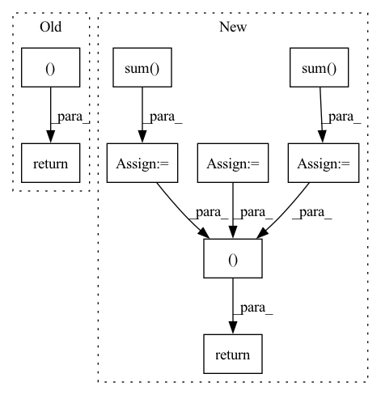

Pattern ID :26176

Before Change
zD = self.decode(z_)
out = torch.sigmoid(zD)
return out, kld
def bound(rce, x, kld, beta):
After Change
p = Normal(0., 1.)
// KLD including logdet term
p_z_ = torch.sum(p.log_prob(z_), -1)
q0_z_0 = torch.sum(q0.log_prob(z_0), -1)
log_det = log_det.view(-1)
kld = - torch.sum(p.log_prob(z_), -1) + torch.sum(q0.log_prob(z_0), -1) - log_det.view(-1)
self.test_params = [torch.mean(- torch.sum(p.log_prob(z_), -1)), torch.mean(torch.sum(q0.log_prob(z_0), -1)), torch.mean(- log_det.view(-1)), torch.mean(kld)]
// Decode
z_ = z_.view(z_.size(0), args.latent_size)
zD = self.decode(z_)
out = torch.sigmoid(zD)
return out, p_z_, q0_z_0, log_det
def bound(rce, x, p_z_, q0_z_0, log_det, beta):
In pattern: SUPERPATTERN
Frequency: 3
Non-data size: 9
Instances
Fragment ID: 78887123
Project Name: vincentstimper/normalizing-flows
Commit Name: bd001374eacad94bdea4150d2bfd1876d35d7523
Time: 2020-03-08
Author: 43236963+lukasryll@users.noreply.github.com
File Name: normflow/inf_network.py
M Class Name: FlowVAE
N Class Name: FlowVAE
M Method Name: forward(2)
N Method Name: forward(2)
M Parent Class: nn.Module
N Parent Class: nn.Module
M File Name: normflow/inf_network.py
N File Name: normflow/inf_network.py
M Start Line: 84
M End Line: 92
N Start Line: 73
N End Line: 95
'>
Before Change
1. Calculate centroids
masked_data = data * onehot_labels // (num_data, K, D)
pseudo_centroids = masked_data.sum(dim=0)
normalizer = onehot_labels.sum(dim=0)
centroids = pseudo_centroids / normalizer // (K, D)
2. Put labels based on distance
distance = torch.norm((data - centroids), dim=2) // (num_data, K)
distance, cluster_id = torch.min(distance, dim=1)
onehot_labels = torch.eye(K)[cluster_id].to(data.device)
self.num_data = num_data
self.data = data
self.onehot_labels = onehot_labels
return onehot_labels, centroids
def _test_kmeans():
import os
import pandas as pd
After Change
masked_data = mask.unsqueeze(dim=3) * data.unsqueeze(dim=2) // (batch_size, num_samples, K, num_features)
pseudo_centroids = masked_data.sum(dim=1) // (batch_size, K, num_features)
denominator = mask.sum(dim=1).unsqueeze(dim=2) // (batch_size, K, 1)
centroids = pseudo_centroids / denominator // (batch_size, K, num_features)
2. Put labels based on distance
distance = self.compute_distance(data.unsqueeze(dim=2), centroids.unsqueeze(dim=1), dim=3) // (batch_size, num_samples, K)
cluster_ids = torch.argmin(distance, dim=2) // (batch_size, num_samples)
self.cluster_ids = cluster_ids
return cluster_ids, centroids
def _test_kmeans():
import os
import pandas as pd
'>
Fragment ID: 78887120
Project Name: tky823/dnn-based_source_separation
Commit Name: 7b95c667530d4ceff32ddab1a2e1a01eef946d34
Time: 2021-11-07
Author: delta9guitar97@gmail.com
File Name: src/algorithm/clustering.py
M Class Name: KMeans
N Class Name: KMeans
M Method Name: update_once(1)
N Method Name: update_once(1)
M Parent Class: KMeansBase
N Parent Class: nn.Module
M File Name: src/algorithm/clustering.py
N File Name: src/algorithm/clustering.py
M Start Line: 64
M End Line: 87
N Start Line: 105
N End Line: 127
'>
Before Change
if white_bkg:
acc_map = torch.sum(weights, -1)
rgb = rgb + (1.-acc_map[...,None])
return rgb, weights // output (ray_num, 3) and (ray_num, point_num)
class DecayLrScheduler:
def __init__(self, min_r, decay_r, step, lr, warmup_step = 0):
After Change
if white_bkg:
acc_map = torch.sum(weights, -1)
rgb = rgb + (1.-acc_map[...,None])
extras = dict()
if render_depth is not None:
near, far = render_depth
extras["depth_img"] = (torch.sum(weights * depth, dim = -1) - near) / (far - near)
if normal_info is not None:
normal, cam_dir = normal_info // (..., 3), shape (3, 1)
extras["normal_img"] = (torch.sum(weights * (normal @ cam_dir), dim = -1) + 1.) * 0.5
return rgb, weights, extras // output (ray_num, 3) and (ray_num, point_num)
class DecayLrScheduler:
def __init__(self, min_r, decay_r, step, lr, warmup_step = 0):
'>
Fragment ID: 78887115
Project Name: enigmatisms/nerf
Commit Name: 1df8bfc06b0d591529d16c028d74805cb985171e
Time: 2022-08-17
Author: 984041003@qq.com
File Name: py/nerf_base.py
M Class Name: NeRF
N Class Name: NeRF
M Method Name: render(8)
N Method Name: render(6)
M Parent Class: nn.Module
N Parent Class: nn.Module
M File Name: py/nerf_base.py
N File Name: py/nerf_base.py
M Start Line: 73
M End Line: 78
N Start Line: 72
N End Line: 90